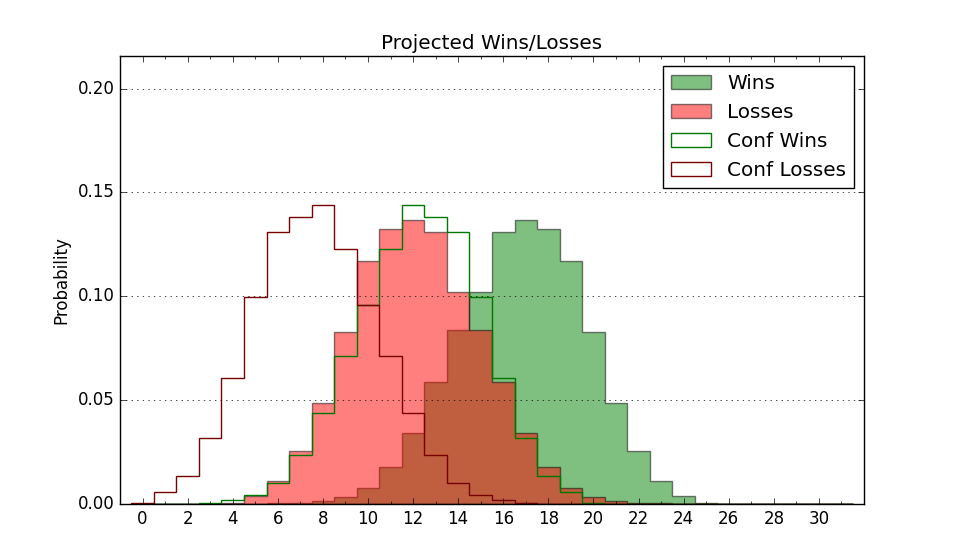

| Home | Game Probabilities | Conferences | Preseason Predictions | Odds Charts | NCAA Tournament |
| City: | Little Rock, Arkansas | |
| Conference: | Ohio Valley (1st)
| |
| Record: | 0-0 (Conf) 4-4 (Overall) | |
| Ratings: | Comp.: -8.1 (248th) Net: -5.6 (217th) Off: 95.4 (311th) Def: 101.0 (116th) SoR: 1.0 (155th) |
| Remaining | ||||||
|---|---|---|---|---|---|---|
| Date | Opponent | Win Prob | Pred. | |||
| 12/15 | Illinois Chicago (199) | 54.1% | W 75-74 | |||
| 12/19 | SIU Edwardsville (258) | 66.7% | W 70-65 | |||
| 12/21 | Eastern Illinois (328) | 79.5% | W 73-63 | |||
| 1/2 | @ Tennessee Martin (308) | 48.3% | L 71-72 | |||
| 1/4 | @ Tennessee St. (342) | 58.2% | W 76-73 | |||
| 1/9 | Morehead St. (319) | 78.3% | W 75-66 | |||
| 1/11 | Southern Indiana (252) | 65.6% | W 72-68 | |||
| 1/14 | @ Southeast Missouri St. (300) | 45.1% | L 71-72 | |||
| 1/18 | @ Tennessee Tech (271) | 40.6% | L 70-73 | |||
| 1/23 | @ Western Illinois (326) | 52.9% | W 67-66 | |||
| 1/25 | @ Lindenwood (349) | 62.7% | W 71-68 | |||
| 1/30 | Tennessee St. (342) | 82.6% | W 80-69 | |||
| 2/1 | Tennessee Martin (308) | 76.1% | W 76-68 | |||
| 2/6 | @ Southern Indiana (252) | 35.9% | L 68-72 | |||
| 2/8 | @ Morehead St. (319) | 51.5% | W 71-70 | |||
| 2/11 | Southeast Missouri St. (300) | 73.7% | W 75-68 | |||
| 2/13 | Tennessee Tech (271) | 70.0% | W 74-68 | |||
| 2/20 | Lindenwood (349) | 85.1% | W 76-64 | |||
| 2/22 | Western Illinois (326) | 79.3% | W 71-62 | |||
| 2/27 | @ Eastern Illinois (328) | 53.2% | W 68-67 | |||
| 3/1 | @ SIU Edwardsville (258) | 37.1% | L 66-70 | |||
| Previous | Game Score | |||||
| Date | Opponent | Win Prob | Result | Off | Def | Net |
| 11/9 | @Winthrop (204) | 26.7% | L 67-82 | -12.7 | 2.0 | -10.7 |
| 11/12 | @Arkansas St. (135) | 17.8% | L 63-80 | 3.2 | -7.8 | -4.6 |
| 11/16 | @UTSA (247) | 35.0% | W 81-64 | 9.4 | 18.1 | 27.5 |
| 11/20 | @Tulsa (270) | 40.6% | W 71-57 | 11.3 | 14.1 | 25.4 |
| 11/22 | @Arkansas (42) | 3.6% | L 67-79 | 5.5 | 16.8 | 22.4 |
| 11/25 | @Illinois (17) | 1.9% | L 34-92 | -33.6 | -2.0 | -35.7 |
| 11/27 | Md Eastern Shore (362) | 93.4% | W 78-59 | 2.0 | 6.3 | 8.3 |
| 12/4 | Central Arkansas (337) | 81.2% | W 63-57 | -22.1 | 15.0 | -7.1 |
| Stats & Trends | |||||
|---|---|---|---|---|---|
| Current | Day | Week | Month | Season | |
| Composite | -8.1 | -0.2 | -0.8 | +4.3 | +4.3 |
| Comp Rank | 248 | -2 | -8 | +56 | +56 |
| Net Efficiency | -5.6 | -0.3 | -2.1 | +993.4 | -- |
| Net Rank | 217 | -2 | -13 | +28 | -- |
| Off Efficiency | 95.4 | -0.1 | -2.4 | +95.4 | -- |
| Off Rank | 311 | -2 | -44 | -66 | -- |
| Def Efficiency | 101.0 | -0.2 | +0.3 | +898.0 | -- |
| Def Rank | 116 | -- | +23 | +129 | -- |
| SoS Rank | 138 | -2 | -63 | +107 | -- |
| Exp. Wins | 16.8 | -0.1 | +0.1 | +2.9 | +2.7 |
| Exp. Conf Wins | 12.3 | -0.1 | -0.2 | +1.2 | +1.0 |
| Conf Champ Prob | 27.1 | -0.6 | -0.7 | +10.6 | +9.5 |

| Advanced Stats | ||
|---|---|---|
| Stat | Value | Rank |
| Off Eff FG % | 0.483 | 227 |
| Off Ast Ratio | 0.150 | 146 |
| Off ORB% | 0.260 | 239 |
| Off TO Rate | 0.193 | 357 |
| Off FT Ratio | 0.293 | 268 |
| Def Eff FG % | 0.475 | 99 |
| Def Ast Ratio | 0.163 | 301 |
| Def ORB% | 0.341 | 338 |
| Def TO Rate | 0.174 | 66 |
| Def FT Ratio | 0.413 | 307 |